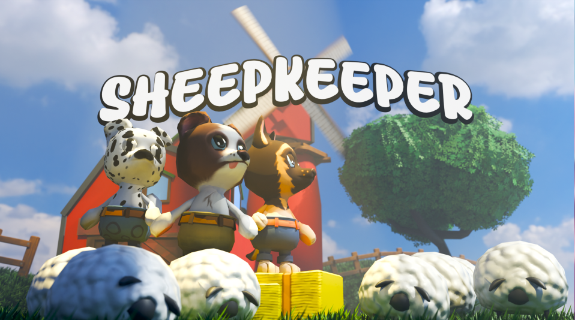

03 Featured Projects

Greg The Frog
Greg the Frog: Burning Escape is a fast and momentum-driven platformer where split-second choices matter just as much as quick reflexes.
As a Gameplay Programmer, I was responsible for implementing
- Follower System
- Checkpoint System
- Lives & Respawn
- Audio Manager
- Feedback System
Developed as part of a 15-person multidisciplinary team, collaborating closely with designers and other disciplines to prototype, iterate, and polish gameplay systems.

Shaperfolk
Shaperfolk is a tower defense game set in the Amazon Rainforest, where the great Ceiba tree Poe connects the flora and fauna of the forest. When the Lumberfolk invade the rainforest seeking magical powers from Poe's bark, players must defend the forest using a variety of towers and strategic combinations.
As a Gameplay Programmer, I worked on the
- Tower Framework
- Fusion System
- Status Effects
- Projectile Combat
Developed as part of an 18-person multidisciplinary team, working closely with designers and other disciplines to iterate and polish the gameplay experience.

Sheepkeeper
Sheepkeeper is a cozy local co-op herding game where two players work together to guide a flock of sheep through levels, avoid hazards, and safely reach the barn.
As a Gameplay Programmer, I worked primarily on the
- Sheep Behaviour System
- Sheep Flocking AI
- Leader Behaviour
- Sheep Ability System
- Obstacle Avoidance
- Environmental Hazards
- Post-Processing Effects
Developed as part of a 12-person multidisciplinary team, working closely with designers to iterate on gameplay, AI behaviour and level interactions.